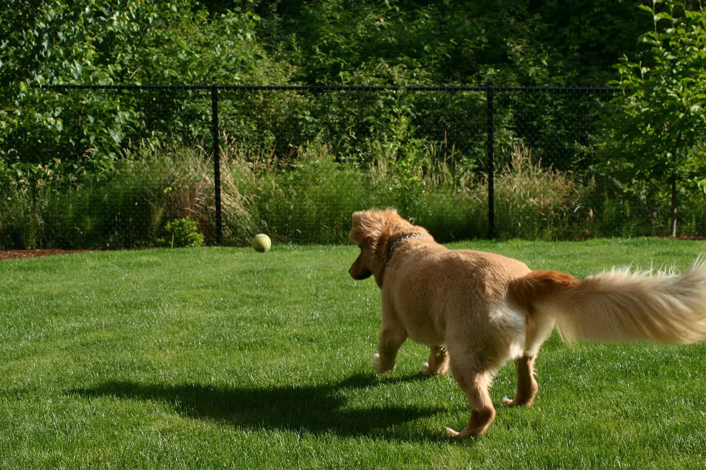
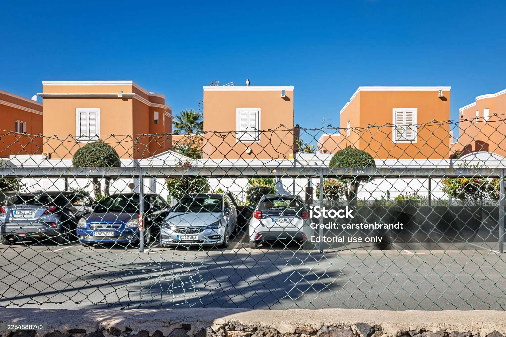

Installing a fence can be a great decision for your home. One of the tough decisions that comes with installing one, however, is picking the right kind of fence for your yard. There are many kinds of fences you could get, and one that we can recommend to you is chain-link fencing. If you get a chain-link fence for your yard, you can benefit in many ways.
A Chain-Link Fence is Durable
If you get chain-link fencing for your yard, you'll have a durable fence that can withstand whatever obstacles the weather has to throw at it. They are also able to hold strong against pests since these fences don't harbor any sort of dust or debris. Finally, because of the holes that chain-link fences have, wind will pass right through them, so strong winds are less likely to be a problem for your fence.
There Aren't Many Maintenance Requirements
Another perk of getting chain-link fencing is that there aren't too many maintenance requirements. Most of the time, you'll just have to keep up with removing cobwebs and debris from your fence. You don't have to deal with tasks like painting and staining when you get a chain-link fence for your yard.
It's a Budget-Friendly Fencing Option
Chain-link fences tend to be more budget-friendly than other fencing options you could consider. Not only do they tend to be inexpensive to install, but the lack of maintenance requirements means that you'll also save money over time as well when compared to other kinds of fences you could get. This makes chain-link fencing a good investment both in the short-term, and also in the long run.

Good Visibility
A chain-link fence will have holes in it. This means that you can see through your fence. As a result, you'll be able to see everything going on around your yard. All the while, you'll still have a strong and durable border around your house.

A chain-link fence offers the perfect balance of security and visibility — keeping your property safe while maintaining an open feel for your yard.